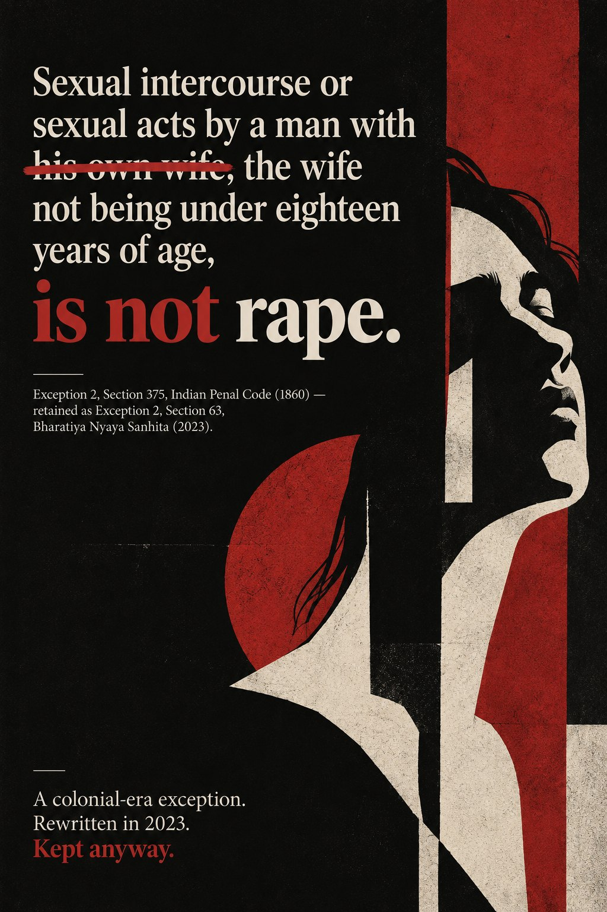

A digital exhibit, added to through the term एक डिजिटल प्रदर्शनी, जो पूरे सत्र में बढ़ती रहेगी
The law has a name for this. It just isn't rape.
कानून के पास इसका एक नाम है। बस वह नाम बलात्कार नहीं है।
In India a husband cannot be prosecuted for raping his adult wife. Not because the act falls outside the definition of rape, but because the law writes one exception into that definition, and marriage is it. This exhibit collects the documents, images and numbers that sit around that exception: what it says, where it came from, who has fought it, and what it costs.
भारत में किसी पति पर अपनी वयस्क पत्नी के बलात्कार का मुकदमा नहीं चलाया जा सकता। इसलिए नहीं कि वह कृत्य बलात्कार की परिभाषा से बाहर है, बल्कि इसलिए कि कानून उस परिभाषा में एक अपवाद लिख देता है, और वह अपवाद है विवाह। यह प्रदर्शनी उन दस्तावेज़ों, तस्वीरों और आँकड़ों को एकत्र करती है जो इस अपवाद के इर्द-गिर्द खड़े हैं: यह क्या कहता है, कहाँ से आया, किसने इससे लड़ाई लड़ी, और इसकी कीमत कौन चुकाता है।

Exhibit poster, 2026. Original work made for this exhibit, not archival campaign material. प्रदर्शनी पोस्टर, 2026। इस प्रदर्शनी के लिए बनाई गई मौलिक कृति, कोई पुरालेखीय अभियान सामग्री नहीं।
Motif: the marriage thread continues as chain and closes in a lock. Marriage is the point at which the law stops asking about consent. प्रतीक: विवाह का धागा आगे चलकर ज़ंजीर बनता है और एक ताले पर जाकर बंद हो जाता है। विवाह ही वह बिंदु है जहाँ कानून सहमति पूछना बंद कर देता है।
The exception, in its own words
अपवाद, उसके अपने शब्दों में
Click each underlined phrase to see what work it is doing.
यह देखने के लिए कि हर वाक्यांश क्या काम कर रहा है, उस पर क्लिक कीजिए।
Exception 2, Section 375, Indian Penal Code (1860) / Section 63, Bharatiya Nyaya Sanhita (2023)
Sexual intercourse or sexual acts by a man with his own wife, the wife not being under eighteen years of age, is not rape.
किसी पुरुष द्वारा अपनी ही पत्नी के साथ संभोग या यौन कृत्य, जबकि पत्नी अठारह वर्ष से कम आयु की न हो, बलात्कार नहीं है।
Three phrases. Each one is load bearing. तीन वाक्यांश। हर एक अपने आप में निर्णायक है।
How the exception has, and has not, moved
यह अपवाद कितना बदला, और कितना नहीं
Five moments when it could have gone. Click a year.
पाँच मौके जब यह हट सकता था। किसी वर्ष पर क्लिक कीजिए।
The archive
संग्रह
Four objects across the term, added one at a time.
इस सत्र में चार वस्तुएँ, एक-एक करके जोड़ी जाएँगी।
The clause that survived its own rewrite
वह धारा जो अपने ही पुनर्लेखन से बच निकली
THE OBJECTवस्तु
"Sexual intercourse or sexual acts by a man with his own wife, the wife not being under eighteen years of age, is not rape."
"किसी पुरुष द्वारा अपनी ही पत्नी के साथ संभोग या यौन कृत्य, जबकि पत्नी अठारह वर्ष से कम आयु की न हो, बलात्कार नहीं है।"Exception 2, Section 375, Indian Penal Code, 1860, as read down in Independent Thought v. Union of India (2017), and carried forward in substance as Exception 2 to Section 63, Bharatiya Nyaya Sanhita, 2023.
The object here is not a photograph or a pamphlet. It is twenty six words of statute, and that is the point. Almost everything this exhibit collects later sits downstream of this clause. What is worth noticing first is how little it argues. It never claims that a husband cannot rape his wife. It simply defines the act out of existence by naming the relationship instead of naming consent, which is the standard the rest of Section 375 actually uses.
What makes it worth opening with is what happened to it in 2023. When India replaced the Indian Penal Code with the Bharatiya Nyaya Sanhita, a rewrite publicly framed as shedding colonial era criminal law, the marital exception was not repealed. It was retyped. Section 63 carries the same exception, the same age threshold, the same structure. A carve out written in 1860 survived a ground up rewrite intact. That means it is not a legislative oversight waiting to be corrected. It is a position the state has now affirmed twice: in 2017 by raising the age but not touching the principle, and in 2023 by choosing, out of everything in the code it was willing to change, not to change this.
bell hooks argues in Understanding Patriarchy that patriarchy's real power lies not in spectacular acts of domination but in arrangements so ordinary that they are never named as violence, arrangements taught and accepted inside the family as simply how things are. Exception 2 is that argument in statutory form. The clause never asserts a husband's entitlement. It does something quieter and far more durable, which is to place the marital home outside the category where the question of consent can even be legally asked. hooks' point is that patriarchy survives by being unremarkable. A criminal code that could be written from scratch in 2023 and still carry this clause forward without public argument is unremarkability made permanent.
The strikethrough exercise above is meant to make that legible. The clause does its work through very ordinary words, "own wife" and "not rape," carrying enormous legal weight without ever needing to defend itself.
यहाँ प्रस्तुत वस्तु कोई तस्वीर या पर्चा नहीं है। यह कानून के छब्बीस शब्द हैं, और यही इसकी अहमियत है। इस प्रदर्शनी में आगे जो कुछ आएगा, लगभग वह सब इसी धारा से निकलता है। सबसे पहले ध्यान देने की बात यह है कि यह धारा कितना कम तर्क देती है। यह कभी यह दावा नहीं करती कि पति अपनी पत्नी का बलात्कार कर ही नहीं सकता। यह बस सहमति का नाम लेने के बजाय रिश्ते का नाम लेकर उस कृत्य को परिभाषा से बाहर कर देती है, जबकि सहमति ही वह कसौटी है जो धारा 375 बाकी हर जगह इस्तेमाल करती है।
इसे पहली वस्तु बनाने की वजह 2023 में घटी बात है। जब भारत ने भारतीय दंड संहिता की जगह भारतीय न्याय संहिता लाई, एक ऐसा पुनर्लेखन जिसे सार्वजनिक रूप से औपनिवेशिक आपराधिक कानून से मुक्ति के रूप में पेश किया गया, तब वैवाहिक अपवाद हटाया नहीं गया। उसे दोबारा टाइप कर दिया गया। धारा 63 वही अपवाद, वही आयु-सीमा, वही ढाँचा दोहराती है। 1860 में लिखा गया एक अपवाद पूरी तरह नए सिरे से लिखे गए कानून में ज्यों का त्यों बच गया। इसका अर्थ है कि यह कोई विधायी चूक नहीं है जो सुधार की प्रतीक्षा में हो। यह एक ऐसा रुख है जिसकी पुष्टि राज्य अब दो बार कर चुका है: 2017 में आयु बढ़ाकर, पर सिद्धांत को छुए बिना, और 2023 में, पूरे कानून में इतना कुछ बदलने को तैयार होते हुए भी इसे न बदलने का चुनाव करके।
बेल हुक्स अंडरस्टैंडिंग पैट्रिआर्की में तर्क देती हैं कि पितृसत्ता की असली ताकत वर्चस्व के नाटकीय कृत्यों में नहीं, बल्कि उन व्यवस्थाओं में है जो इतनी सामान्य हैं कि उन्हें कभी हिंसा कहा ही नहीं जाता, जो परिवार के भीतर सिखाई और स्वीकारी जाती हैं, मानो चीज़ें ऐसी ही होती हैं। अपवाद 2 उसी तर्क का कानूनी रूप है। यह धारा पति के अधिकार का दावा कभी नहीं करती। यह उससे कहीं शांत और कहीं टिकाऊ काम करती है, वैवाहिक घर को उस श्रेणी से ही बाहर रख देती है जहाँ सहमति का सवाल कानूनी रूप से पूछा जा सके। हुक्स का मत है कि पितृसत्ता सामान्य दिखकर ही टिकती है। जो आपराधिक कानून 2023 में नए सिरे से लिखा जा सके और फिर भी इस धारा को बिना किसी सार्वजनिक बहस के आगे ले जाए, वह उसी सामान्यता को स्थायी बना देता है।
ऊपर दिया गया स्ट्राइकथ्रू अभ्यास इसी को दिखाने के लिए है। यह धारा बेहद साधारण शब्दों, "अपनी ही पत्नी" और "बलात्कार नहीं", के ज़रिए इतना भारी कानूनी बोझ ढोती है, और उसके लिए कभी अपना बचाव करने की ज़रूरत भी महसूस नहीं करती।
The survey that counts what the law refuses to name
वह सर्वेक्षण जो उसे गिनता है जिसे कानून नाम देने से इनकार करता है
THE OBJECTवस्तु
National Family Health Survey, Fifth Round (NFHS-5), 2019-21, India Report. Chapter on Domestic Violence. International Institute for Population Sciences, Mumbai, under the stewardship of the Ministry of Health and Family Welfare, Government of India.
राष्ट्रीय परिवार स्वास्थ्य सर्वेक्षण, पाँचवाँ दौर (NFHS-5), 2019-21, भारत रिपोर्ट। घरेलू हिंसा अध्याय। अंतरराष्ट्रीय जनसंख्या विज्ञान संस्थान, मुंबई, स्वास्थ्य एवं परिवार कल्याण मंत्रालय, भारत सरकार के निर्देशन में।NFHS-5 fieldwork: June 2019 to April 2021. Sample: 724,115 women and 101,839 men across 636,699 households in all states and union territories.
Percentage of ever married women aged 18-49 reporting each form of spousal violence. NFHS-5 (2019-21) data as analysed in Ramasubramani et al., Journal of Public Health (2023). Categories overlap; the combined figure is 32%. 18-49 आयु वर्ग की विवाहित महिलाओं का प्रतिशत जिन्होंने वैवाहिक हिंसा के प्रत्येक प्रकार की रिपोर्ट की। NFHS-5 (2019-21) के आँकड़े, रामसुब्रमणि एवं अन्य, जर्नल ऑफ़ पब्लिक हेल्थ (2023) के विश्लेषण के अनुसार। श्रेणियाँ ओवरलैप करती हैं; संयुक्त आँकड़ा 32% है।
Physical violence, by educationशारीरिक हिंसा, शिक्षा के अनुसार
Physical violence, by locationशारीरिक हिंसा, स्थान के अनुसार
Spousal physical or sexual violence, by husband's drinkingवैवाहिक शारीरिक या यौन हिंसा, पति की शराब के अनुसार
Violence by anyone: who speaks upकिसी भी व्यक्ति द्वारा हिंसा: कौन बोलता है
Figures as reported in coverage of the NFHS-5 national report (2019-21). Education and location figures are for physical violence; the drinking figure is for spousal physical or sexual violence; the last card covers violence by anyone, not only husbands. NFHS-5 राष्ट्रीय रिपोर्ट (2019-21) की मीडिया रिपोर्टिंग के अनुसार आँकड़े। शिक्षा और स्थान के आँकड़े शारीरिक हिंसा के हैं; शराब का आँकड़ा वैवाहिक शारीरिक या यौन हिंसा का है; अंतिम कार्ड किसी भी व्यक्ति द्वारा की गई हिंसा को दर्शाता है, केवल पतियों को नहीं।
Object 01 established what the law says. This one turns to how many people live underneath it. The National Family Health Survey is India's largest demographic and health survey, conducted roughly every five years under the Ministry of Health and Family Welfare. In its fifth round, covering 2019 to 2021, it interviewed over 724,000 women. One of the things it asked ever married women aged 18 to 49 was whether their husband had ever physically forced them to have sexual intercourse or to perform sexual acts they did not want to perform. About six percent said yes.
That number does not sound large until you remember what it is. Roughly six in every hundred of the ever married women who answered the survey's domestic violence module, about 64,000 of them, told an interviewer that their husband had forced them into sex. The survey also found that 32 percent of married women in the same age group have experienced some form of spousal violence, whether physical, sexual or emotional. In more than 80 percent of cases of physical violence against women, the perpetrator named was the husband. And only 14 percent of women who experienced physical or sexual violence from anyone have ever brought the issue up with anyone at all.
The object here is not only the numbers. It is the fact that these numbers exist inside a government report. The same state that maintains a criminal code exempting husbands from prosecution for rape also runs a survey that asks wives whether their husbands forced them into sex, records their answers, publishes the data, and does nothing to reconcile the two. The NFHS does not use the word rape. It does not need to. The questions it asks describe exactly the conduct that Section 375 defines as rape everywhere except inside a marriage. The survey measures what the law refuses to name, and then both instruments sit side by side in the same government's filing cabinet.
Crenshaw's framework of intersectionality, assigned in Session 7, helps make visible what the national average hides. The NFHS data shows that violence is not distributed evenly. Physical violence is sharply higher among women with no schooling (40 percent) than among those who completed their education (18 percent), and higher in rural areas (32 percent) than in urban ones (24 percent). Spousal physical or sexual violence is roughly three times as common when the husband drinks (about 70 percent) as when he does not (about 23 percent). The exception in the criminal code is written as though all marriages are the same, but the survey data shows that the women who live most directly under it are also the women with the fewest resources to leave, to report, or to access the civil remedies that are supposed to substitute for criminal ones. The law's neutrality is the problem, not the solution.
वस्तु 01 ने बताया कि कानून क्या कहता है। यह वस्तु यह देखती है कि उसके नीचे कितने लोग जीते हैं। राष्ट्रीय परिवार स्वास्थ्य सर्वेक्षण भारत का सबसे बड़ा जनसांख्यिकीय और स्वास्थ्य सर्वेक्षण है, जो स्वास्थ्य एवं परिवार कल्याण मंत्रालय के तहत लगभग हर पाँच साल में किया जाता है। अपने पाँचवें दौर में, जो 2019 से 2021 तक चला, इसने 7,24,000 से अधिक महिलाओं का साक्षात्कार लिया। एक सवाल जो इसने 18 से 49 वर्ष की विवाहित महिलाओं से पूछा वह यह था कि क्या उनके पति ने कभी उन्हें शारीरिक रूप से संभोग के लिए या ऐसे यौन कृत्यों के लिए बाध्य किया जो वे नहीं करना चाहती थीं। लगभग छह प्रतिशत ने हाँ कहा।
यह संख्या छोटी लगती है जब तक आप याद नहीं करते कि यह क्या है। सर्वेक्षण के घरेलू हिंसा खंड में जवाब देने वाली लगभग 64,000 विवाहित महिलाओं में से हर सौ में लगभग छह ने साक्षात्कारकर्ता को बताया कि उनके पति ने उन्हें संभोग के लिए बाध्य किया। सर्वेक्षण में यह भी पाया गया कि उसी आयु वर्ग की 32 प्रतिशत विवाहित महिलाओं ने किसी न किसी रूप में वैवाहिक हिंसा झेली है, चाहे शारीरिक हो, यौन हो या भावनात्मक। महिलाओं के विरुद्ध शारीरिक हिंसा के 80 प्रतिशत से अधिक मामलों में नामित अपराधी पति था। और जिन महिलाओं ने किसी भी व्यक्ति से शारीरिक या यौन हिंसा झेली, उनमें से केवल 14 प्रतिशत ने कभी किसी से इसकी बात उठाई।
यहाँ वस्तु केवल ये आँकड़े नहीं हैं। वस्तु यह तथ्य है कि ये आँकड़े एक सरकारी रिपोर्ट के भीतर मौजूद हैं। वही राज्य जो एक ऐसी दंड संहिता चलाता है जिसमें पतियों को बलात्कार के मुकदमे से छूट है, वही एक सर्वेक्षण भी चलाता है जो पत्नियों से पूछता है कि क्या उनके पतियों ने उन्हें बाध्य किया, उनके जवाब दर्ज करता है, आँकड़े प्रकाशित करता है, और इन दोनों में कोई सामंजस्य बिठाने की कोशिश नहीं करता। NFHS "बलात्कार" शब्द का प्रयोग नहीं करता। उसे ज़रूरत भी नहीं। जो सवाल वह पूछता है वे ठीक उसी आचरण का वर्णन करते हैं जिसे धारा 375 विवाह के अलावा हर जगह बलात्कार की परिभाषा में रखती है। सर्वेक्षण उसे मापता है जिसे कानून नाम देने से इनकार करता है, और फिर दोनों उपकरण उसी सरकार की फ़ाइलों में एक साथ बैठे रहते हैं।
सत्र 7 में निर्धारित क्रेनशॉ का अंतर-अनुभागीयता (intersectionality) का ढाँचा उसे दिखाने में मदद करता है जो राष्ट्रीय औसत छिपा देता है। NFHS के आँकड़े बताते हैं कि हिंसा समान रूप से वितरित नहीं है। बिना स्कूली शिक्षा वाली महिलाओं में शारीरिक हिंसा 40 प्रतिशत है, जबकि शिक्षा पूरी करने वालियों में 18 प्रतिशत, और ग्रामीण क्षेत्रों में 32 प्रतिशत है, शहरी में 24 प्रतिशत। जब पति शराब पीता है तो वैवाहिक शारीरिक या यौन हिंसा लगभग तीन गुना अधिक होती है (लगभग 70 प्रतिशत, बनाम लगभग 23 प्रतिशत)। दंड संहिता का अपवाद ऐसे लिखा गया है मानो सभी विवाह एक जैसे हों, लेकिन सर्वेक्षण के आँकड़े दिखाते हैं कि जो महिलाएँ इस अपवाद के सबसे सीधे प्रभाव में जीती हैं, वही वे महिलाएँ हैं जिनके पास छोड़ने, शिकायत करने, या उन नागरिक उपायों तक पहुँचने के सबसे कम साधन हैं जो आपराधिक उपायों की जगह लेने वाले माने जाते हैं। कानून की तटस्थता समस्या है, समाधान नहीं।
Coming next
अगली वस्तु
Objects 01 and 02 established the law and the numbers. Object 03 will move closer to lived experience: a documentary, testimony, protest material or court document that shows how the exception plays out beyond the statute book and the survey table.
वस्तु 01 और 02 ने कानून और आँकड़े प्रस्तुत किए। वस्तु 03 जीवित अनुभव के और करीब जाएगी: कोई वृत्तचित्र, गवाही, प्रतिरोध सामग्री या अदालती दस्तावेज़ जो दिखाए कि यह अपवाद कानून की किताब और सर्वेक्षण की तालिका से आगे कैसे काम करता है।
About this exhibit
इस प्रदर्शनी के बारे में
The theme
विषय
This exhibit follows one legal fact and its social life. Indian law does not recognise non consensual sex within marriage as rape, provided the wife is an adult. Each object is read against that fact. Does it defend the exception, expose it, work around it, or simply show what it does to the people living under it.
यह प्रदर्शनी एक कानूनी तथ्य और उसके सामाजिक जीवन का पीछा करती है। भारतीय कानून विवाह के भीतर बिना सहमति के यौन संबंध को बलात्कार नहीं मानता, बशर्ते पत्नी वयस्क हो। हर वस्तु उसी तथ्य के सामने रखकर पढ़ी जाती है। क्या वह इस अपवाद का बचाव करती है, उसे उजागर करती है, उसके इर्द-गिर्द रास्ता बनाती है, या बस यह दिखाती है कि इसके नीचे जीने वालों पर इसका क्या असर पड़ता है।
How it is built
यह कैसे बनी है
Each entry pairs one object with an analysis of no more than 500 words, placing it inside the theme and against a reading from the course. Objects carry the date they were added rather than a date the exhibit concludes, because it does not conclude. Neither has the law.
हर प्रविष्टि एक वस्तु को अधिकतम 500 शब्दों के विश्लेषण के साथ जोड़ती है, जो उसे विषय के भीतर और पाठ्यक्रम की किसी पठन-सामग्री के सामने रखती है। वस्तुओं पर वह तारीख है जब वे जोड़ी गईं, कोई समापन तिथि नहीं, क्योंकि यह समाप्त नहीं होती। न ही कानून।